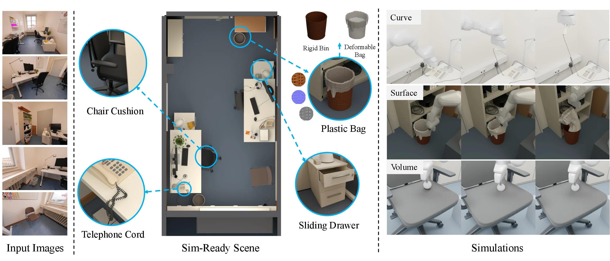
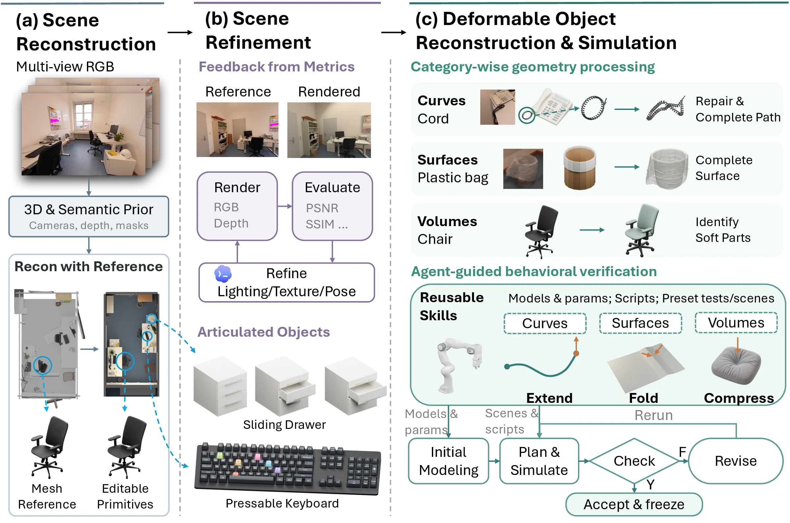
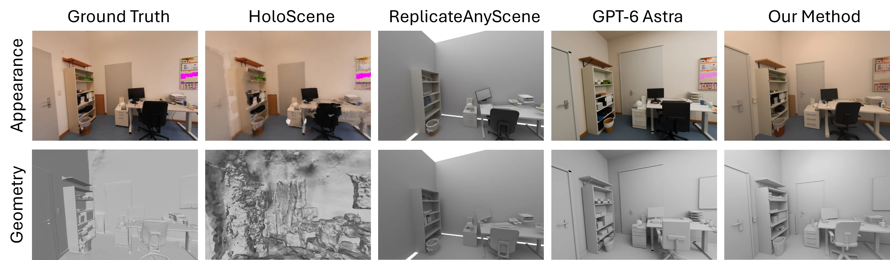

Curve · discrete elastic rod
Telephone cord
A Franka lifts the handset through finger contact and the coiled cord extends. The rod keeps its reconstructed coil as natural shape; peak handset lift is about 198 mm.

CoDimRecon is an agentic framework that turns multi-view RGB images into an editable, simulation-ready scene of rigid, articulated, and deformable objects. Scene-level geometric priors ground scale and layout, object-level generated meshes guide the agent toward detailed, compact geometry, and articulated objects such as the office drawer above are split into movable parts with explicit joints.
Deformables are reconstructed by dimensionality in dedicated agent sessions: curves such as the telephone cord become centerlines with radii, surfaces such as the plastic bag become manifold shells with thickness — kept separate from its rigid bin — and volumes such as the chair cushion become watertight solids for volumetric meshing. Reusable simulator skills then initialize compatible physical models and parameters, and agent-guided robot tests expose mismatches and trigger targeted revisions of motion, geometry, numerics, or material modeling, yielding a scene that robots can directly interact with in simulation.
Simulation-ready assets · Scene 067-D
Every object in the reconstructed office is handed to the simulator with a physical description. Click any object to see its category, mass, friction, and joints, and for deformable curves, surfaces, and volumes, the constitutive model and parameters used in simulation.
None of the evaluated reconstruction baselines outputs deformable assets for physical simulation, so we report capability demonstrations. Reconstructed curves, surfaces, and volumes are simulated with an inserted robot on an IPC-family contact backend and replayed in Blender for rendering.
A Franka lifts the handset through finger contact and the coiled cord extends. The rod keeps its reconstructed coil as natural shape; peak handset lift is about 198 mm.
The 0.03 mm bag deforms freely with no pinned vertices and is held through contact alone; the bin is a separate rigid body.
The gripper folds the sheet through 140°. With plastic hinge bending selected by behavioral testing, the crease is retained after release.
A 70 mm rounded tool presses the cushion at three points; it indents by about 23 mm and recovers. Material and lighting are modified to make the indentation visible.
Released under gravity without supports or damping, the reconstructed beanbag settles into its equilibrium rest shape.
The robot pulls the drawer open along the sliding direction recovered during articulated-object reconstruction.
A G1 humanoid walks through the reconstructed office, which serves directly as a simulation environment.
CoDimRecon takes multi-view RGB observations and proceeds in three stages. The agent first authors an editable scene using geometric context and generated meshes as references, then refines appearance, articulation, and rigid-body stability. Finally, it reconstructs deformable curves, surfaces, and volumes and tests their behavior through simulated robot interaction.

Representation follows dimensionality
Cables, cloth, and paper are thin: resolving their thickness volumetrically needs fine through-thickness resolution and can suffer locking. Codimensional models instead represent rods as curves and shells as surfaces embedded in 3D — which changes the reconstruction target itself.
e.g. the coiled telephone cord, cables
e.g. paper, plastic bags, clothing
e.g. chair cushions, beanbags
Closing the reconstruction-to-simulation loop
Simulator examples only initialize a deformable asset. Whether it supports the intended interaction becomes evident only when it is exercised, so the agent plans diagnostic robot manipulations, reviews each rollout, and revises in a fixed order — changing the material model only as a last resort.
Geometry fixes the discretization; the agent picks a material model and adapts the closest example scene.
Excessive sag sends the geometry back for revision; the equilibrium is written back to Blender.
Extend the cord, press the cushion, fold the paper. The agent sets grasps, approach poses, and arm motion.
Bounds on element stretch and inversion, plus task criteria such as lift height or retained fold.
Accepted values are effective parameters under the assumed model — not measured material properties.
We evaluate three Replica and three ScanNet++ scenes from the HoloScene release against HoloScene (optimization-based), ReplicateAnyScene (zero-shot compositional), and GPT-6 Astra — an agent-only baseline that shares our backbone but authors each scene in Blender directly from RGB frames.
HoloScene's higher PSNR and SSIM come with visibly fragmented geometry. Pixel metrics penalize the lighting and material differences that remain in our explicitly authored scenes, whereas in the feature space of a frozen video encoder our renders are closer to the source than HoloScene's on both datasets — suggesting the gap is mainly appearance rather than missing or misplaced content.

Positioning
| Method | Input | Deformable simulation | Geometric guidance | Generative prior | Auto instance discovery | Training-free | Agentic |
|---|---|---|---|---|---|---|---|
| HoloScene | RGB, mask, cam | ✗ | ✓ | ✓ | ✗ | ✗ | ✗ |
| SimRecon | RGB | ✗ | ✓ | ✓ | ✓ | ✓ | ✗ |
| ReplicateAnyScene | RGB | ✗ | ✓ | ✓ | ✓ | ✓ | ✗ |
| VIGA | Single-view RGB | ✗ | ✗ | ✓ | ✓ | ✓ | ✓ |
| Lucida | RGB | ✗ | ✓ | ✓ | ✓ | ✗ | ✓ |
| Lumera | Single-view RGB | ✗ | ✓ | ✓ | ✓ | ✗ | ✓ |
| LiteReality-Agent | Posed RGBD | ✗ | ✓ | ✓ | ✓ | ✓ | ✓ |
| GPT-6 Astra | RGB | ✗ | ✗ | ✗ | ✓ | ✓ | ✓ |
| CoDimRecon (ours) | RGB | ✓ | ✓ | ✓ | ✓ | ✓ | ✓ |
Comparison of compositional scene-reconstruction methods. Cam: camera parameters; RGBD: RGB images with depth. None of the compared methods reconstructs deformable curves, surfaces, and volumes for physical simulation.
@article{xie2026codimrecon,
title = {CoDimRecon: Agentic Reconstruction of Sim-Ready 3D Scenes
with Deformable Curves, Surfaces, and Volumes},
author = {Xie, Shuzhao and Wang, Lelin and Lin, Guying
and Wang, Zhi and Li, Minchen},
journal = {arXiv preprint},
year = {2026}
}We thank Yi-Ling Qiao, Xinyu Lu, and Kemeng Huang for their guidance on using the IPC-based simulator. This work is supported in part by the National Natural Science Foundation of China (Grant Nos. 92467204 and 62472249), the Shenzhen Science and Technology Program (Grant No. KJZD20240903102300001), and gift funding from Genesis AI. Shuzhao Xie's work is supported by the Google Cloud Research Credits program. Shuzhao Xie thanks Chen Tang for help with computational resources.